{kind=link}
{kind=link}
{kind=link}
{kind=link}

AI & Deep Learning
ACTL3143 & ACTL5111 Deep Learning for Actuaries
Artificial Intelligence
Different goals of AI
Artificial intelligence describes an agent which is capable of:
| Thinking humanly | Thinking rationally |
| Acting humanly | Acting rationally |
Put another way, what fields are most important to AI?
| Cognitive science, psychology | Mathematics, logic and inference |
| HCI, linguistics and robotics | Computer science, statistics |
- Actions are simpler to work with than thought: How do humans even think?
- Acting humanly can be done without intelligence, see ChatGPT
- The focus on actions: delivers results, but in a black-box manner
The rational behaviour paradigm won out
“For these reasons, the rational-agent approach to AI has prevailed throughout most of the field’s history. In the early decades, rational agents were built on logical foundations and formed definite plans to achieve specific goals. Later, methods based on probability theory and machine learning allowed the creation of agents that could make decisions under I uncertainty to attain the best expected outcome. In a nutshell, AI has focused on the study and construction of agents that do the right thing.”
— Russell & Norvig (2021, p. 22)
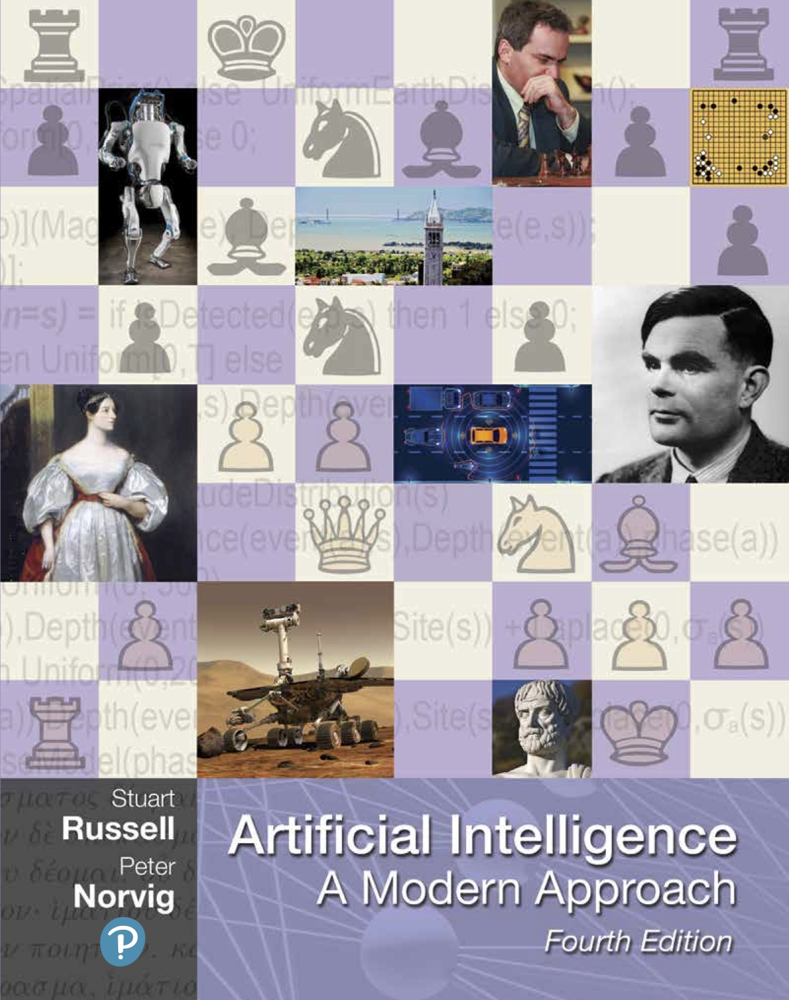
Question: When do you think the term “machine learning” was first coined?
Shakey the Robot (~1966 – 1972)

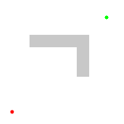
The minimax algorithm
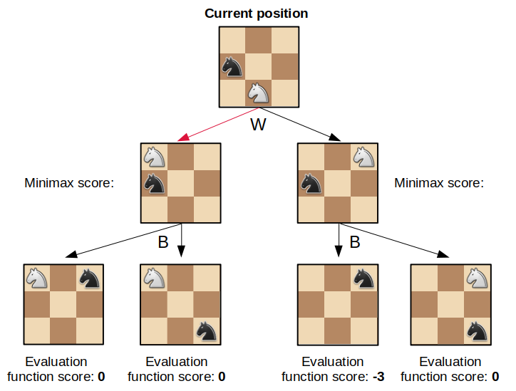
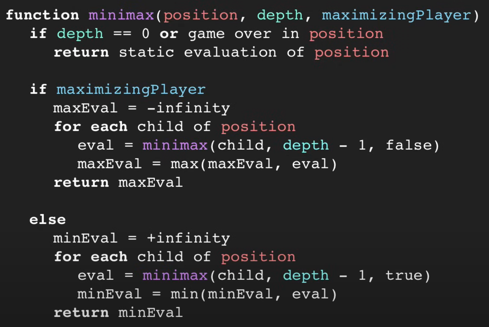
How many moves ahead do you want to think? In this example, the player is thinking two moves ahead.
Reminders about the minimax algorithm:
- Assume all players are rational.
- You want to maximise your score while your opponent wants to minimise it.
- To solve the minimax problem, move backwards from the leaves of the minimax tree.
Chess
Deep Blue (1997)
In 1997, Gary Kasparov played chess against an AI called Deep Blue. Kasparov lost.
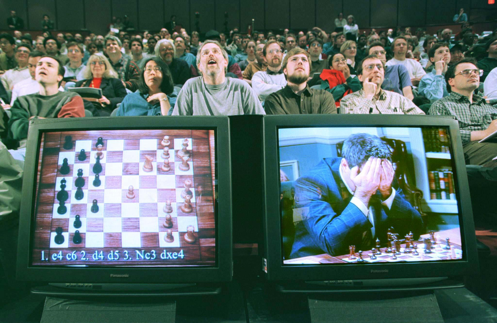
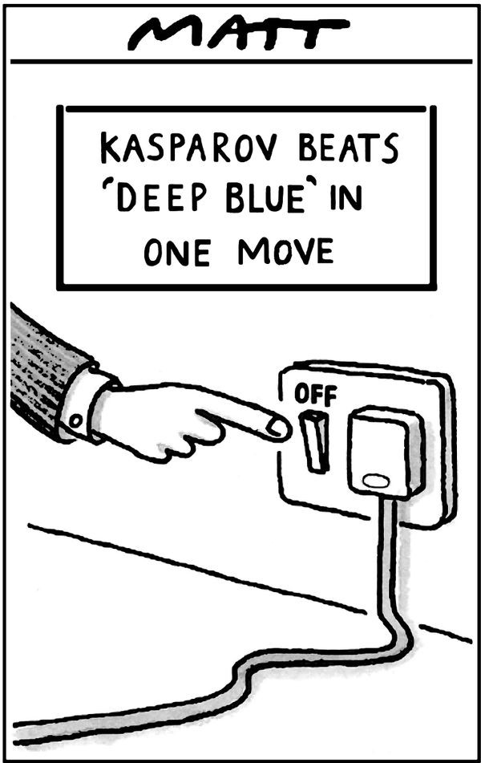
Machine Learning
Tried making a computer smart, too hard!
Make a computer that can learn to be smart.
“[Machine Learning is the] field of study that gives computers the ability to learn without being explicitly programmed”
— Samuel (1959)
AI eventually become dominated by one approach, called machine learning, which itself is now dominated by deep learning (neural networks).
You can study a 12 week course on AI and never touch on machine learning…
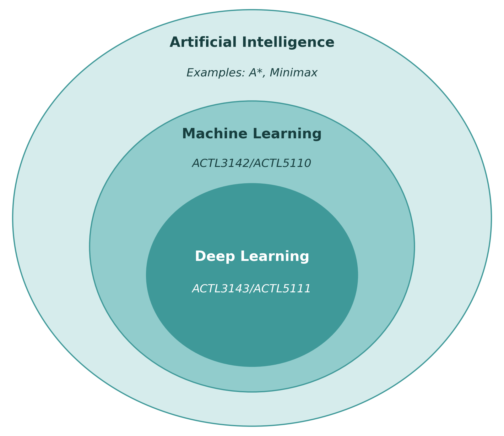
Deep Learning Successes
Image Classification I
What is this?
Options:
- punching bag
- goblet
- red wine
- hourglass
- balloon
Note
Hover over the options to see AI’s prediction (i.e. the probability of the photo being in that category).
Image Classification II
What is this?
Options:
- sea urchin
- porcupine
- echidna
- platypus
- quill
Image Classification III
What is this?
Options:
- dingo
- malinois
- German shepherd
- muzzle
- kelpie
ImageNet Challenge (2012)
ImageNet and the ImageNet Large Scale Visual Recognition Challenge (ILSVRC); originally 1,000 synsets.
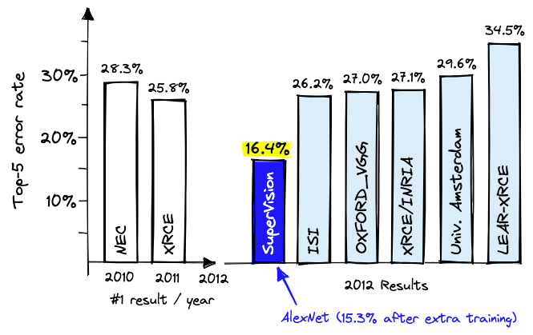
Note:
- ‘Top-5’: The top 5 categories that the NN thought the image was
- ‘Top-5 error rate’: The proportion of times that the correct answer is not in the top 5 guesses
Needed a graphics card
A graphics processing unit (GPU)
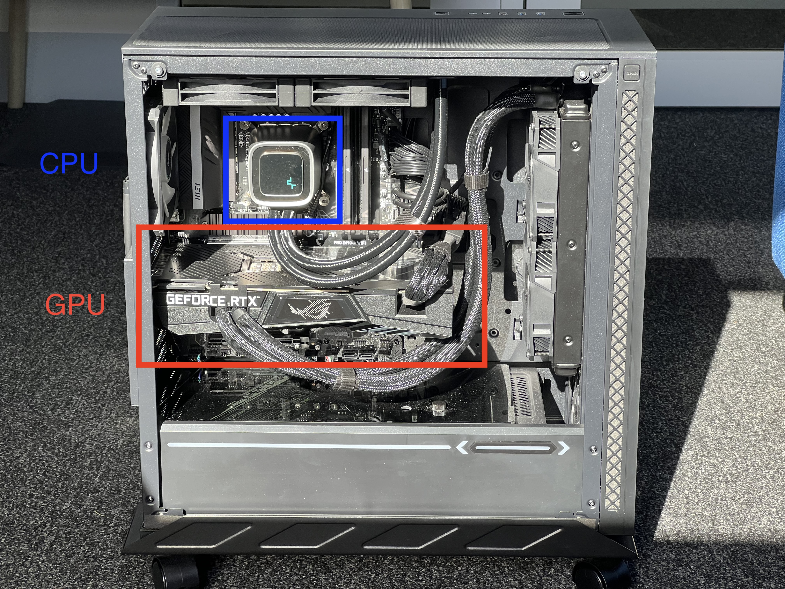
“4.2. Training on multiple GPUs A single GTX 580 GPU has only 3GB of memory, which limits the maximum size of the networks that can be trained on it. It turns out that 1.2 million training examples are enough to train networks which are too big to fit on one GPU. Therefore we spread the net across two GPUs.”
— Krizhevsky et al. (2012)
Lee Sedol plays AlphaGo (2016)
Deep Blue was a win for AI, AlphaGo a win for DL.
I highly recommend this documentary about the event.
Generative Adversarial Networks (2014)
https://thispersondoesnotexist.com/
Diffusion models (2020)
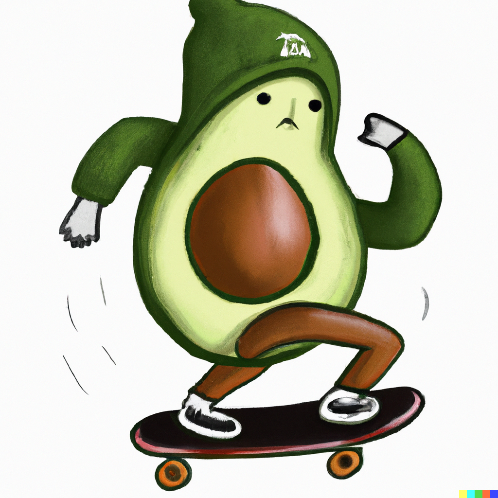
ChatGPT (2022)
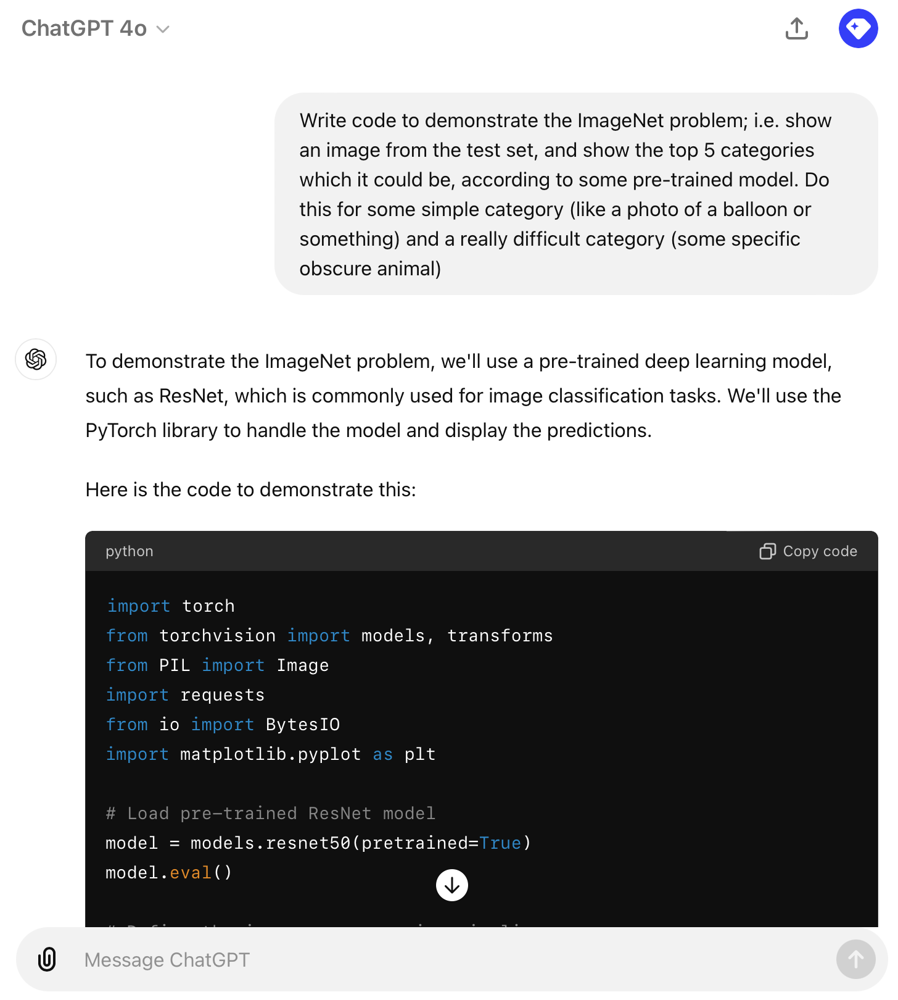
Test ChatGPT’s ability to:
- generate images
- translate code
- explain code
- run code
- analyse a dataset
- critique code
- critique writing
- voice chat with you
Compare to Copilot.
GitHub Copilot (2022)
You can get extra usage for free with GitHub Education for Students
Reasoning models (2024)
Reasoning is basically automating the old trick of adding “do this step-by-step” to your prompts.
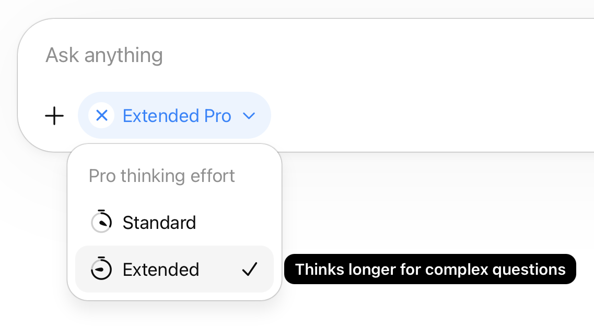
Using the larger language models
- Zoom out as far as possible
- Give it as much relevant context as possible
- Better if it’s easy to ingest (LaTeX or Python/R code), otherwise it has to convert to text
- A simple instruction in the prompt is enough
- Context sizes for the top models have become quite long
- I’ve had the best results when it reasons for 20–30 minutes; then I review each potential issue it finds.
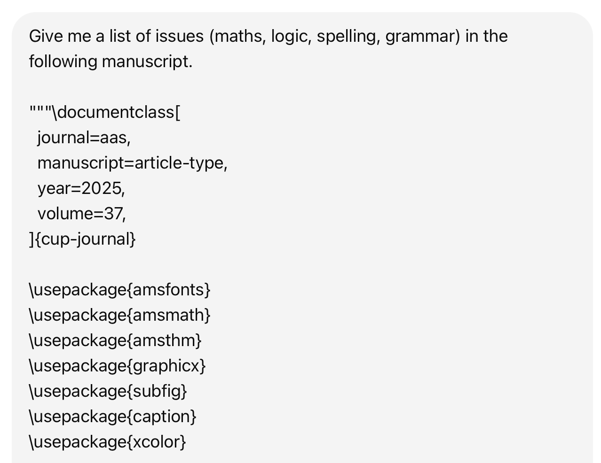
Claude Code (2025)
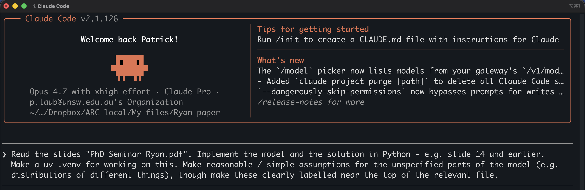
To get an introduction to using the terminal, check this recording.
Types of Machine Learning Tasks
Predictive versus generative
We focus on predictive not generative AI in this course.
Our school has two new courses starting in 2026:
- ACTL4307 “Generative AI for Actuaries”
- ACTL4306 “Quantitative Ethical AI for Risk & Actuarial Applications”
This course focuses on neural networks for supervised learning, and these techniques are the fundamental building blocks for all the others parts of modern AI.
A taxonomy of problems
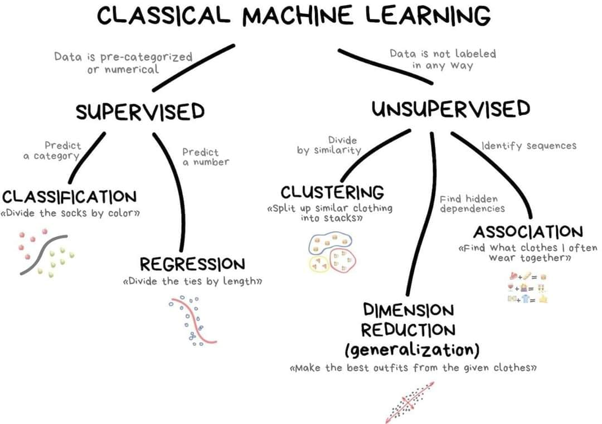
New ones:
- Reinforcement learning
- Semi-supervised learning
- Active learning
Examples of supervised learning
Regression:
- Given policy \hookrightarrow predict the rate of claims.
- Given policy \hookrightarrow predict claim severity.
- Given a reserving triangle \hookrightarrow predict future claims.
Classification:
- Given a claim \hookrightarrow classify as fraudulent or not.
- Given a customer \hookrightarrow predict customer retention patterns.
Supervised learning: mathematically
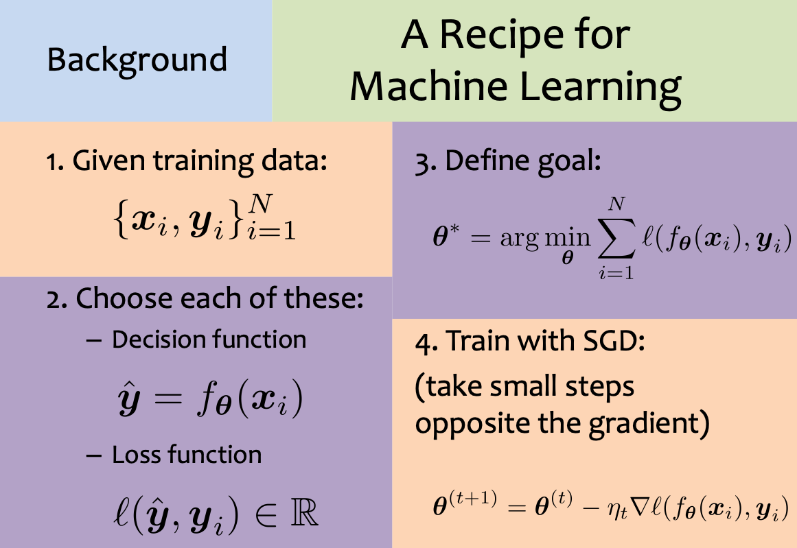
Self-supervised learning
Self-supervised learning is a machine learning technique that trains models using unlabelled data by automatically creating supervisory signals from the data itself.
Data which ‘labels itself’. Example: language model.

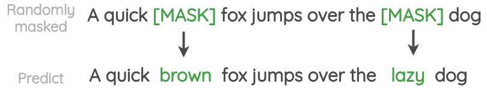
Example: image super-resolution
Other examples: image inpainting, denoising images.
Example: Deoldify images
Neural Networks
How do real neurons work?
A neuron ‘firing’
Similar to a biological neuron, an artificial neuron ‘fires’ when the combined input information exceeds a certain threshold. This activation can be seen as a step function. The difference is that the artificial neuron uses mathematical rules (e.g. weighted sum) to ‘fire’ whereas ‘firing’ in the biological neurons is far more complex and dynamic.
An artificial neuron
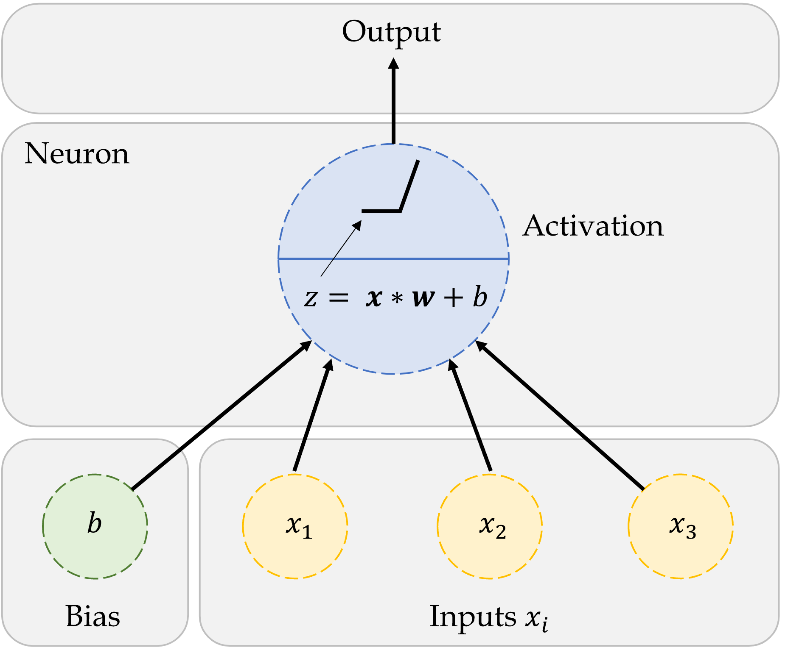
The figure shows how we first compute the weighted sum of inputs, and then evaluate the summation using the step function. If the weighted sum is greater than the pre-set threshold, the neuron ‘fires’.
One neuron
\begin{aligned} z~=~&x_1 \times w_1 + \\ &x_2 \times w_2 + \\ &x_3 \times w_3 . \end{aligned}
a = \begin{cases} z & \text{if } z > 0 \\ 0 & \text{if } z \leq 0 \end{cases}
Here, x_1, x_2, x_3 are just some fixed data.
The weights w_1, w_2, w_3 should be ‘learned’.
One neuron with bias
The bias is a constant term added to the product of inputs and weights. It helps in shifting the entire activation function to either the negative or positive side. This shifting can either accelerate or delay the activation. For example, if the bias is negative, it will shift the entire curve to the right, making the activation harder. This is similar to delaying the activation.
\begin{aligned} z~=~&x_1 \times w_1 + \\ &x_2 \times w_2 + \\ &x_3 \times w_3 + b . \end{aligned}
a = \begin{cases} z & \text{if } z > 0 \\ 0 & \text{if } z \leq 0 \end{cases}
The weights w_1, w_2, w_3 and bias b should be ‘learned’.


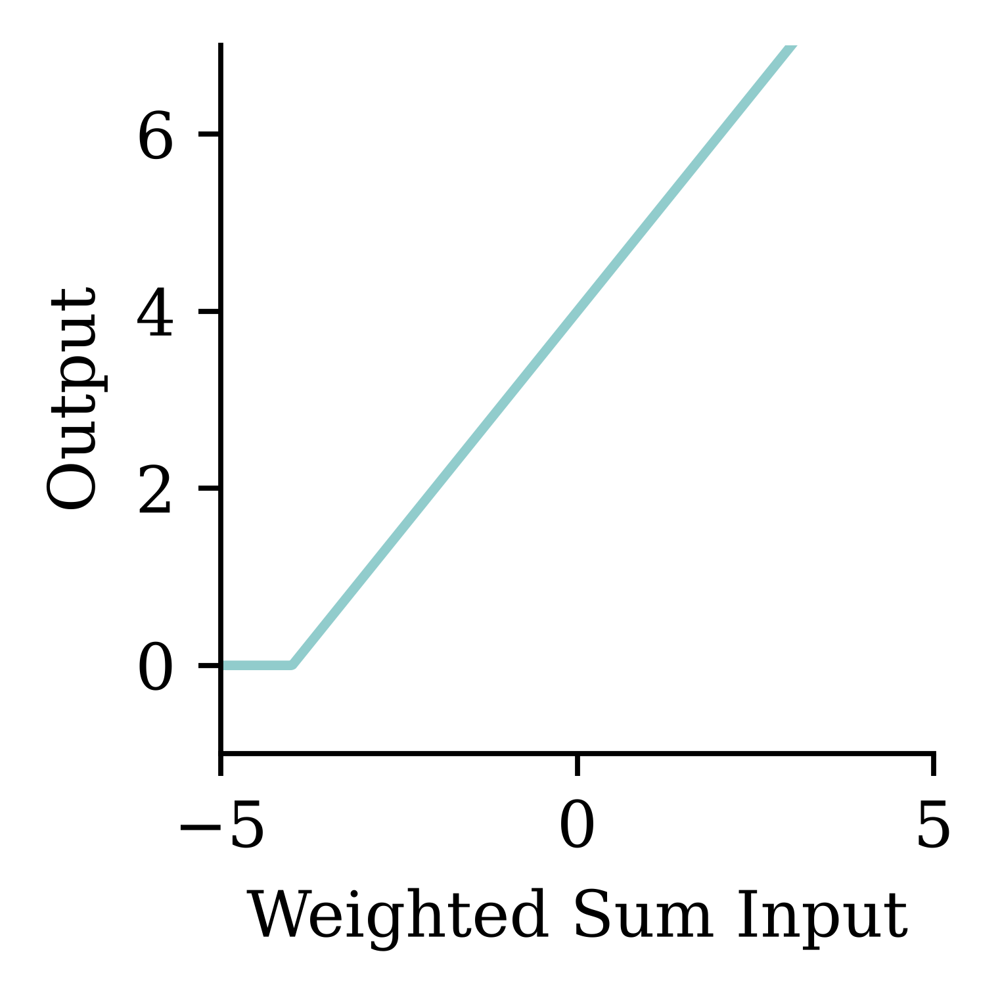
A basic neural network
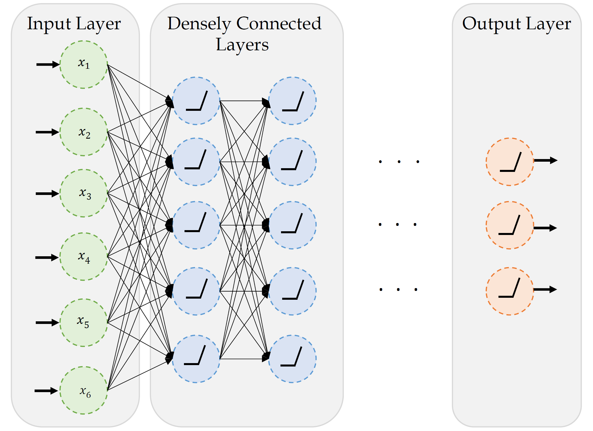
This neural network consists of an input layer with 6 neurons (x_1, x_2, x_3, x_4, x_5, x_6), an output layer with 3 neurons, and 2 hidden layers with 5 neurons in each layer. Since every neuron is linked to every other neuron, this is called a fully connected neural network.
Since we have 6 inputs and 1 bias in the input layer, each neuron in the first hidden layer has 6+1=7 parameters to learn.
Similarly, there are 5 neurons and 1 bias in each hidden layer. Each neurion in the second hidden layer has 5+1=6 parameters to learn.
Assuming the final hidden layer also has 5 neurons, each neuron in the output layer has 5+1=6 parameters to learn.
Step-function activation
Perceptrons
Brains and computers are binary, so make a perceptron with binary data. Seemed reasonable, impossible to train.
Modern neural network
Replace binary state with continuous state. Still rather slow to train.
Note
It’s a neural network made of neurons, not a “neuron network”.
Try different activation functions

Activation functions are essential for a neural network design. They provide the mathematical rule for ‘firing’ the neuron. There are many activation functions, and the choice of the activation function depends on the problem we are trying to solve. Note: If we use the ‘linear’ activation function at every neuron, then the regression learning problem becomes a simple linear regression. But if we use ‘ReLu’, ‘tanh’, or any other non-linear function, then, we can introduce non-linearity into the model so that the model can learn complex non-linear patterns in the data. There are activation functions in both the hidden layers and the output layer. The activation function in the hidden layer controls how the neural network learns complex non-linear patterns in the training data. The choice of activation function in the output layer determines the type of predictions we get.
Flexible
One can show that an MLP is a universal approximator, meaning it can model any suitably smooth function, given enough hidden units, to any desired level of accuracy (Hornik 1991). One can either make the model be “wide” or “deep”; the latter has some advantages…
— Murphy (2012, p. 566)
Feature engineering
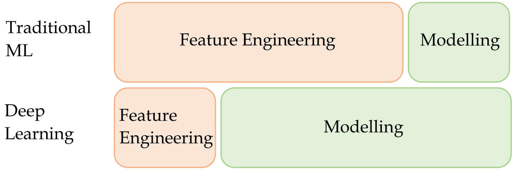
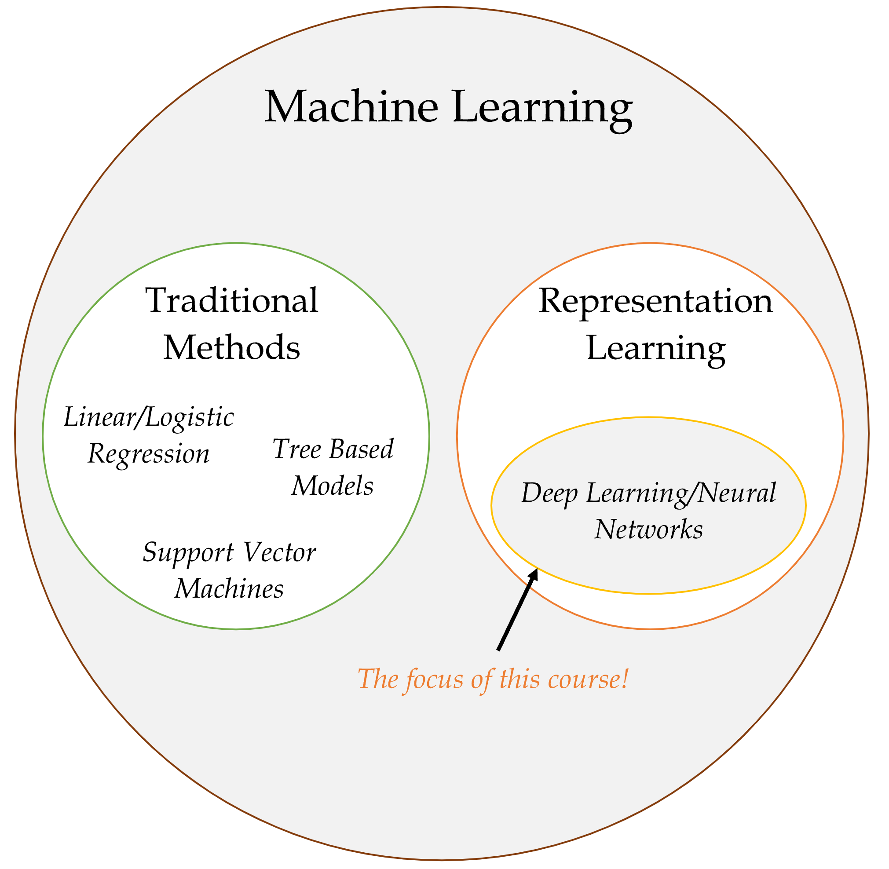
A major part of traditional machine learning (TML) involves conducting feature engineering to extract relevant features manually. In contrast, representational learning does not involve heavy manual feature engineering, rather, it learns relevant features automatically from data during the task. Therefore, the effort spent on feature engineering in representational learning is minimal compared to TML.
Quiz
In this ANN, how many of the following are there:
- features,
- targets,
- weights,
- biases, and
- parameters?
What is the depth?
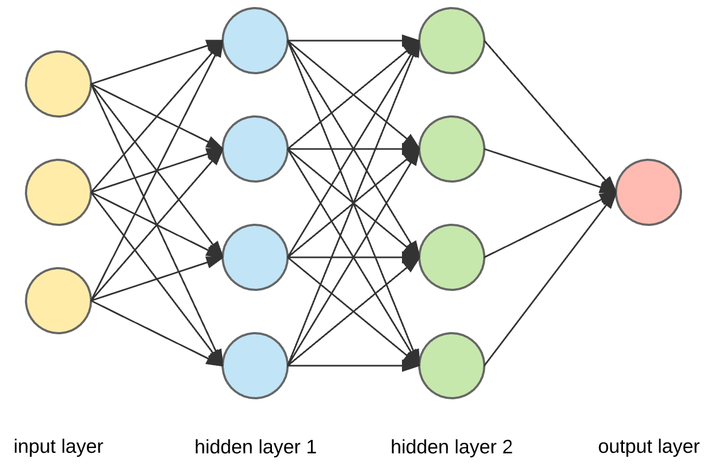
- There are 3 inputs, hence, 3 features.
- There is 1 neuron in the output layer, hence, 1 target.
- There are 3 \times 4 + 4 \times 4 + 4\times 1 = 32 arrows, hence, there are 32 weights in total.
- Since there is 1 bias for each neuron, there are 9 biases in total.
- The number of total parameters to learn equals to the sum of weights and biases, hence, there are 32+9=41 parameters in total.
California House Price Prediction
Imports needed for this demo
import random
import numpy as np
import pandas as pd
from sklearn.datasets import fetch_california_housing
from sklearn.model_selection import train_test_split
from sklearn.linear_model import LinearRegression
from sklearn.metrics import mean_squared_error
from sklearn.preprocessing import StandardScaler, MinMaxScaler
from keras.models import Sequential
from keras.layers import Dense, Input
from keras.callbacks import EarlyStopping
from keras.callbacks import ModelCheckpointData science always starts with the data!
The target variable is the median house value for California districts, expressed in $100,000’s. This dataset was derived from the 1990 U.S. census, using one row per census block group. A block group is the smallest geographical unit for which the U.S. Census Bureau publishes sample data (a block group typically has a population of 600 to 3,000 people).

Columns
MedIncmedian income in block groupHouseAgemedian house age in block groupAveRoomsaverage number of rooms per householdAveBedrmsaverage # of bedrooms per householdPopulationblock group populationAveOccupaverage number of household membersLatitudeblock group latitudeLongitudeblock group longitudeMedHouseValmedian house value (target)
Import the data
features, target = fetch_california_housing(as_frame=True, return_X_y=True)
features| MedInc | HouseAge | AveRooms | AveBedrms | Population | AveOccup | Latitude | Longitude | |
|---|---|---|---|---|---|---|---|---|
| 0 | 8.3252 | 41.0 | 6.984127 | 1.023810 | 322.0 | 2.555556 | 37.88 | -122.23 |
| 1 | 8.3014 | 21.0 | 6.238137 | 0.971880 | 2401.0 | 2.109842 | 37.86 | -122.22 |
| 2 | 7.2574 | 52.0 | 8.288136 | 1.073446 | 496.0 | 2.802260 | 37.85 | -122.24 |
| ... | ... | ... | ... | ... | ... | ... | ... | ... |
| 20637 | 1.7000 | 17.0 | 5.205543 | 1.120092 | 1007.0 | 2.325635 | 39.43 | -121.22 |
| 20638 | 1.8672 | 18.0 | 5.329513 | 1.171920 | 741.0 | 2.123209 | 39.43 | -121.32 |
| 20639 | 2.3886 | 16.0 | 5.254717 | 1.162264 | 1387.0 | 2.616981 | 39.37 | -121.24 |
20640 rows × 8 columns
Train/validation/test split
X_main, X_test, y_main, y_test = train_test_split(
features, target, test_size=0.2, random_state=1)
X_train, X_val, y_train, y_val = train_test_split(
X_main, y_main, test_size=0.25, random_state=1)
num_features = features.shape[1]
print(X_train.shape, X_val.shape, X_test.shape)(12384, 8) (4128, 8) (4128, 8)Linear regression baseline
Refit the linear regression from earlier; we’ll compare neural networks against this baseline.
lr = LinearRegression()
lr.fit(X_train, y_train)
mse_lr_train = mean_squared_error(y_train, lr.predict(X_train))
mse_lr_val = mean_squared_error(y_val, lr.predict(X_val))
mse_train = {"Linear Regression": mse_lr_train}
mse_val = {"Linear Regression": mse_lr_val}Our First Neural Network
What are Keras and PyTorch?
Keras is a common way of specifying, training, and using neural networks. It gives a simple interface to various backend libraries, including PyTorch.
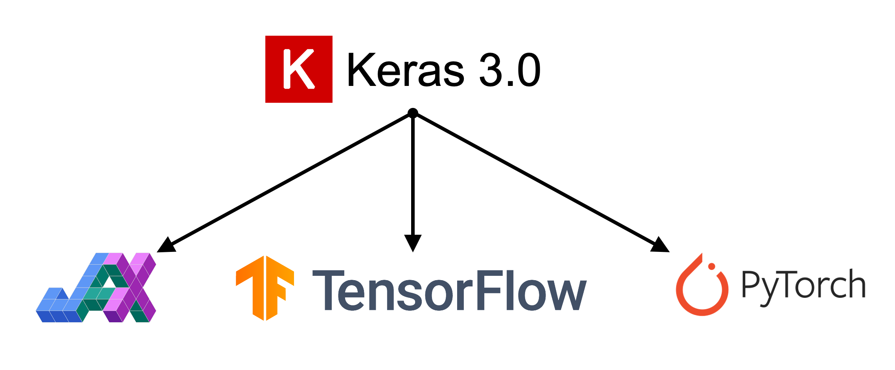
Create a Keras ANN model
Decide on the architecture: a simple fully-connected network with one hidden layer with 30 neurons.
Create the model:
1model = Sequential(
[Input((num_features,)),
Dense(30, activation="leaky_relu"),
Dense(1, activation="leaky_relu")]
)- 1
- Defines a feed-forward model architecture
This neural network architecture includes one hidden layer with 30 neurons and an output layer with 1 neuron. An activation function is specified (leaky_relu) for both the hidden layer and the output layer. In situations where no activation function is specified for the output layer, it assumes a linear activation.
What is meant by Sequential? The outputs in a given layer become inputs into the next layer, and so on.
Inspect the model
model.summary()Model: "sequential"
┏━━━━━━━━━━━━━━━━━━━━━━━━━━━━━━━━━┳━━━━━━━━━━━━━━━━━━━━━━━━┳━━━━━━━━━━━━━━━┓ ┃ Layer (type) ┃ Output Shape ┃ Param # ┃ ┡━━━━━━━━━━━━━━━━━━━━━━━━━━━━━━━━━╇━━━━━━━━━━━━━━━━━━━━━━━━╇━━━━━━━━━━━━━━━┩ │ dense (Dense) │ (None, 30) │ 270 │ ├─────────────────────────────────┼────────────────────────┼───────────────┤ │ dense_1 (Dense) │ (None, 1) │ 31 │ └─────────────────────────────────┴────────────────────────┴───────────────┘
Total params: 301 (1.18 KB)
Trainable params: 301 (1.18 KB)
Non-trainable params: 0 (0.00 B)
Note: the output shapes have None for the number of rows because the predictions have not yet been made. The None is a placeholder for the potential predictions.
The model is initialised randomly
When fitting the ANN, we need to have some initial values for the weights and biases. These are chosen randomly.
model = Sequential([Dense(30, activation="leaky_relu"), Dense(1, activation="leaky_relu")])
model.predict(X_val.head(3), verbose=0)array([[-139.05],
[ -84.57],
[ -5.82]], dtype=float32)model = Sequential([Dense(30, activation="leaky_relu"), Dense(1, activation="leaky_relu")])
model.predict(X_val.head(3), verbose=0)array([[-108.21],
[ -64.74],
[ -7.1 ]], dtype=float32)We can see how rerunning the same code with the same input data results in significantly different predictions. This is due to the random initialization.
Controlling the randomness
random.seed(2026)
model = Sequential([Dense(30, activation="leaky_relu"), Dense(1, activation="leaky_relu")])
display(model.predict(X_val.head(3), verbose=0))
random.seed(2026)
model = Sequential([Dense(30, activation="leaky_relu"), Dense(1, activation="leaky_relu")])
display(model.predict(X_val.head(3), verbose=0))array([[467.02],
[289.13],
[ 20.93]], dtype=float32)array([[467.02],
[289.13],
[ 20.93]], dtype=float32)By setting the seed, we can control for the randomness.
Fit the model
random.seed(2026)
model = Sequential([
Dense(30, activation="leaky_relu"),
Dense(1, activation="leaky_relu")
])
model.compile("adam", "mse")
%time hist = model.fit(X_train, y_train, epochs=5, verbose=0)
hist.history["loss"]CPU times: user 2.77 s, sys: 180 ms, total: 2.95 s
Wall time: 2.8 s[1095.7493896484375,
6.3134589195251465,
4.662435531616211,
3.2442092895507812,
1.773606300354004]The above code explains how we would fit a basic neural network.
- Define the seed for reproducibility.
- Define the architecture of the model.
- Compile the model.
- Fit the model.
- Return the calculate loss function (
mse) at the end of each epoch.
Compiling the model (step 3) involves giving instructions on how we want the model to be trained. At the least, we must define the optimizer and loss function. The optimizer explains how the model should learn (how the model should update the weights), and the loss function states the objective that the model needs to optimize. In the above code, we use adam as the optimizer and mse (mean squared error) as the loss function.
The fit() function (step 4) takes in the training data, and runs the entire dataset through 5 epochs before training completes. What this means is that the model is run through the entire dataset 5 times. Suppose we start the training process with the random initialization, run the model through the entire data, calculate the mse (after 1 epoch), and update the weights using the adam optimizer. Then we run the model through the entire dataset once again with the updated weights, to calculate the mse at the end of the second epoch. Likewise, we would run the model 5 times before the training completes.
Epoch: Each step looks at a batch of data (say, the first 10 observations), fits the model, compares with the actual values, and updates the weights and biases to improve the loss function (this is 1 update). Then it moves on to the next batch of data, and updates the weights and biases another time… Once it reaches the end of the dataset, it loops back to the beginning of the dataset. This is defined as one single epoch.
%time command computes and prints the amount of time spend on training. By setting verbose=0 we can avoid printing of intermediate results during training. Setting values of 1 or 2 can be useful when we want to observe how the neural network is training.
Make predictions
y_pred = model.predict(X_train[:3], verbose=0)
y_predarray([[ 1.74],
[-0.83],
[ 1.77]], dtype=float32)
Note
The .predict gives us a ‘matrix’ not a ‘vector’. Calling .flatten() will convert it to a ‘vector’.
print(f"Original shape: {y_pred.shape}")
y_pred = y_pred.flatten()
print(f"Flattened shape: {y_pred.shape}")
y_predOriginal shape: (3, 1)
Flattened shape: (3,)array([ 1.74, -0.83, 1.77], dtype=float32)Plot the predictions

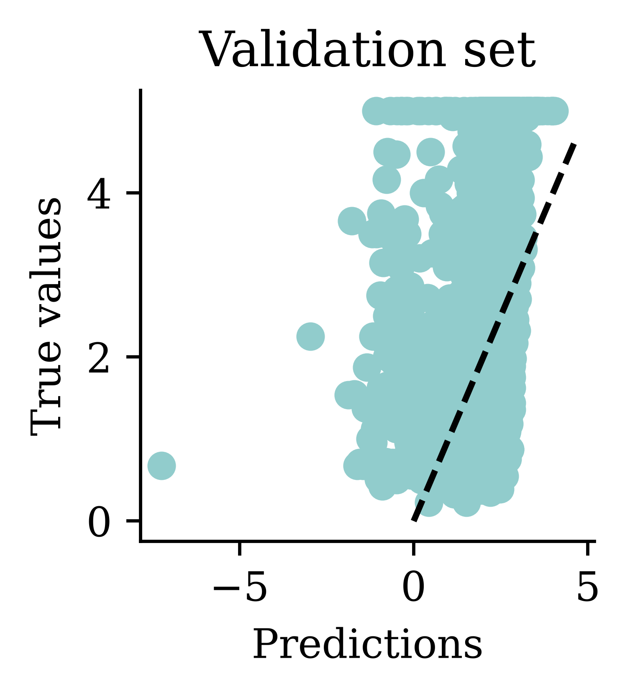
One problem with the predictions is that lots of predictions include negative values, which is unrealistic for house prices. We might have to rethink the activation function in the output layer.
Assess the model
y_pred = model.predict(X_val, verbose=0)
mean_squared_error(y_val, y_pred)1.322503585825187mse_train["Basic ANN"] = mean_squared_error(
y_train, model.predict(X_train, verbose=0)
)
mse_val["Basic ANN"] = mean_squared_error(y_val, model.predict(X_val, verbose=0))Some predictions are negative:
y_pred = model.predict(X_val, verbose=0)
y_pred.min(), y_pred.max()(np.float32(-7.2446113), np.float32(4.038248))y_val.min(), y_val.max()(np.float64(0.225), np.float64(5.00001))Force Positive Predictions
We noted that a lot of the predictions include negative values which is unrealistic for house prices. How can we force the predictions to be positive?
Try running for longer
random.seed(2026)
model = Sequential([
Dense(30, activation="leaky_relu"),
Dense(1, activation="leaky_relu")
])
model.compile("adam", "mse")
%time hist = model.fit(X_train, y_train, epochs=50, verbose=0)CPU times: user 27.6 s, sys: 1.7 s, total: 29.3 s
Wall time: 27.8 sWe will train the same neural network architecture with more epochs (epochs=50) to see if the results improve.
Loss curve
plt.plot(range(1, 51), hist.history["loss"])
plt.xlabel("Epoch")
plt.ylabel("MSE");
The loss curve experiences a sudden drop even before finishing 5 epochs and remains consistently low. This indicates that increasing the number of epochs from 5 to 50 does not significantly increase the accuracy.
Loss curve
plt.plot(range(2, 51), hist.history["loss"][1:])
plt.xlabel("Epoch")
plt.ylabel("MSE");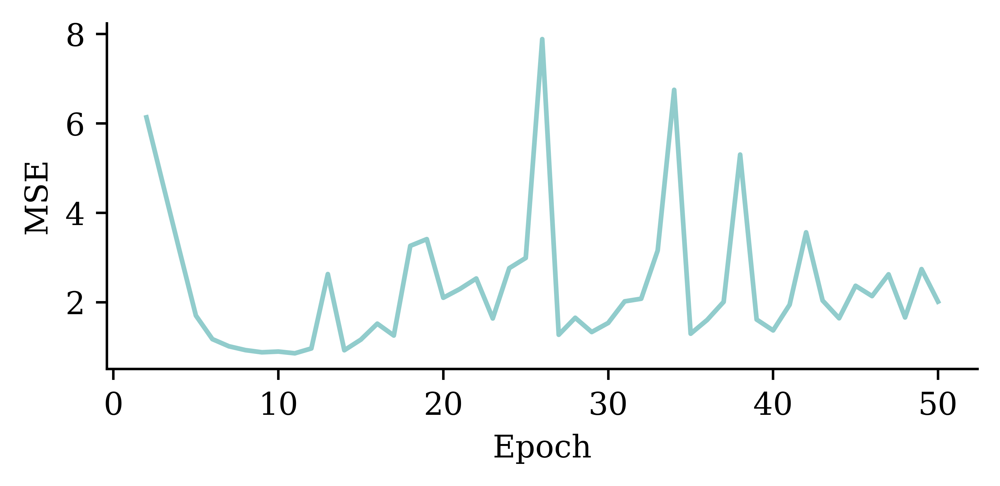
The above code filters out the MSE value from the first epoch. It plots the vector of MSE values starting from the 2nd epoch. By doing so, we can observe the fluctuations in the MSE values across different epochs more clearly. Results show that the model does not benefit from increasing the epochs.
Predictions
y_pred = model.predict(X_val, verbose=0)
print(f"Min prediction: {y_pred.min():.2f}")
print(f"Max prediction: {y_pred.max():.2f}")Min prediction: -6.00
Max prediction: 8.25plt.scatter(y_pred, y_val)
plt.xlabel("Predictions")
plt.ylabel("True values")
add_diagonal_line()mse_train["Long run ANN"] = mean_squared_error(
y_train, model.predict(X_train, verbose=0)
)
mse_val["Long run ANN"] = mean_squared_error(y_val, model.predict(X_val, verbose=0))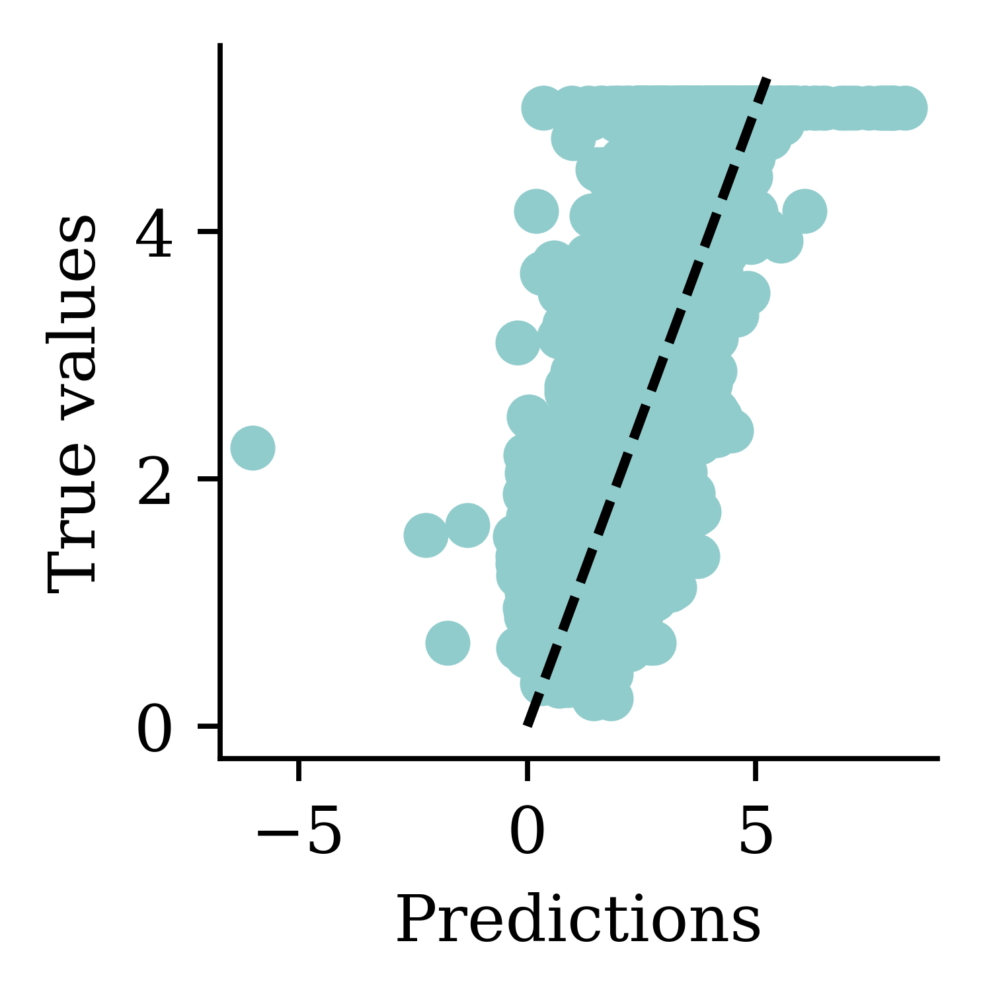
While there is an improvement, we are still seeing some negative predictions. What else can we try, other than training the NN for longer?
Try different activation functions
We can choose a different activation function for the final layer, namely, an activation function that guarantees a positive output.
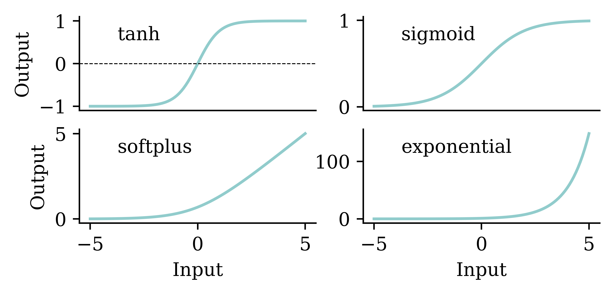
We should be mindful when selecting the activation function. Both tanh and sigmoid functions restrict the output values to the range of [0,1]. This is not sensible for house price modelling. softplus does not have that problem. Also, softplus ensures the output is positive which is realistic for house prices.
Enforce positive outputs (softplus)
random.seed(2026)
model = Sequential([
Dense(30, activation="leaky_relu"),
Dense(1, activation="softplus")
])
model.compile("adam", "mse")
%time hist = model.fit(X_train, y_train, epochs=50, verbose=0)
losses = np.round(hist.history["loss"], 2)
print(losses[:5], "...", losses[-5:])CPU times: user 27.6 s, sys: 1.83 s, total: 29.4 s
Wall time: 28 s
[973.53 5.64 5.64 5.64 5.64] ... [5.64 5.64 5.64 5.64 5.64]Plot the predictions

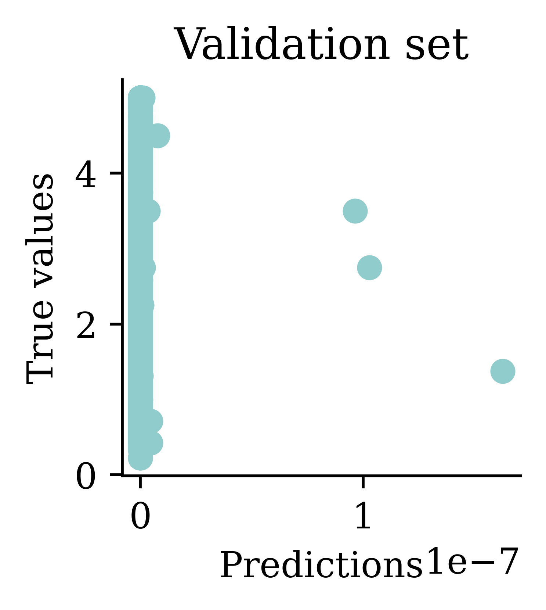
Plots illustrate how all the outputs were stuck at zero. Irrespective of how many epochs we run, the output would always be zero.
Enforce positive outputs (\mathrm{e}^{\,x})
CPU times: user 2.79 s, sys: 199 ms, total: 2.99 s
Wall time: 2.84 s
[nan, nan, nan, nan, nan]Training the model again with an exponential activation function will give nan values. This is because the outputs can explode easily.
Same as transforming the target
A benefit of NNs is that you don’t have to manually transform the features like you do when fitting a GLM.
Pace & Barry (1997) studied the California house price dataset. This was one of the models they fit:
$$\begin{align} \ln(\text{MedHouseVal}) = & \beta_0 + \beta_1\text{MedInc} + \beta_2\text{MedInc}^2 + \beta_3\text{MedInc}^3 \\ & + \beta_4\ln(\text{HouseAge})+ \beta_5\ln(\text{AveRooms}/\text{Population}) \\ & + \beta_6\ln(\text{AveBedrms}/\text{Population}) + \beta_7\ln(\text{Population}/\text{AveOccup}) \\ & + \beta_8\ln(\text{AveOccup}) \end{align}$$
Note
Fitting \ln(\text{Median Value}) is mathematically identical to the exponential activation function in the final layer (but metrics are in different units).
Good to know others results
If you find that someone else has fit a model to the same dataset, you can compare your metrics to theirs in your report. For example, Pace & Barry (1997) studied this dataset. You can compare the R^2 of their models to the ones we fit here.
GPT can double-check these results
You can ask GPT to fit the linear model shown above to the data using Python and calculate the R^2.
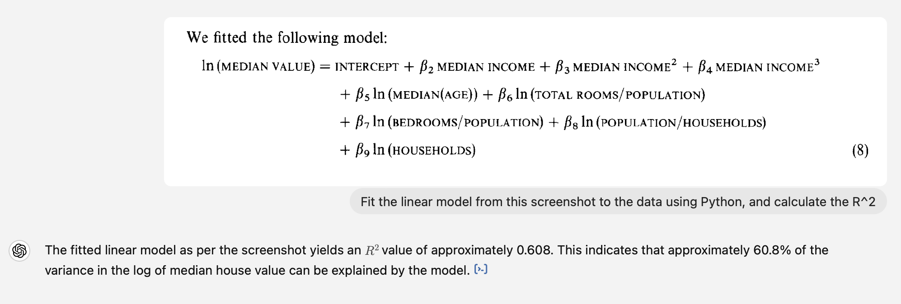
I’d previously given it the CSV of the data.
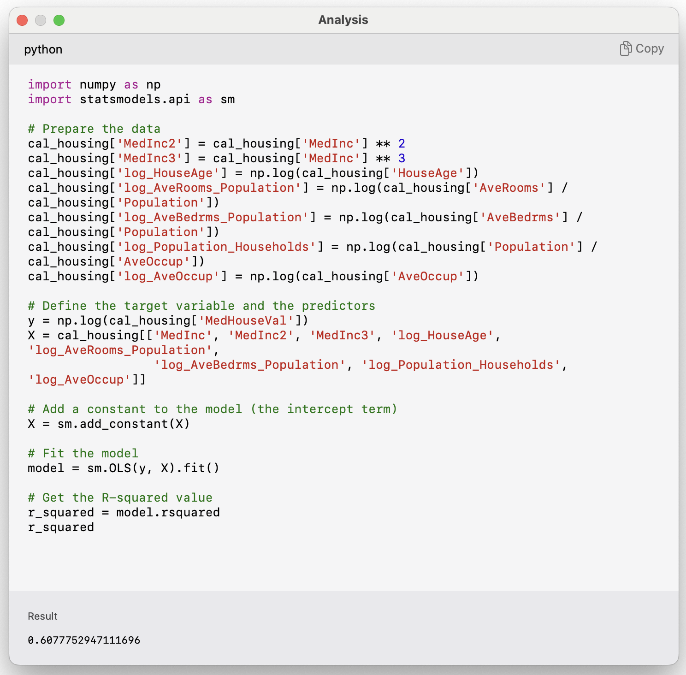
The resulting R^2 is equal to the one documented in the article.
Preprocessing
Re-scaling the inputs
Neural networks prefer if the inputs range between -1 and 1.
scaler = StandardScaler()
scaler.fit(X_train)
X_train_sc = scaler.transform(X_train)
X_val_sc = scaler.transform(X_val)
X_test_sc = scaler.transform(X_test)Note: We apply both the fit and transform operations on the train data. However, we only apply transform on the validation and test data.
plt.hist(X_train.iloc[:, 0])
plt.hist(X_train_sc[:, 0])
plt.legend(["Original", "Scaled"]);
We can see how the original values for the input varied between 0 and 10, and how the scaled input values are now between -2 and 2.5.
Same model with scaled inputs
random.seed(2026)
model = Sequential([
Dense(30, activation="leaky_relu"),
Dense(1, activation="exponential")
])
model.compile("adam", "mse")
%time hist = model.fit(X_train_sc, y_train, epochs=50, verbose=0)CPU times: user 26.8 s, sys: 1.84 s, total: 28.6 s
Wall time: 27.3 sNote the use of X_train_sc instead of X_train.
Loss curve
plt.plot(range(1, 51), hist.history["loss"])
plt.xlabel("Epoch")
plt.ylabel("MSE");
Loss curve
plt.plot(range(10, 51), hist.history["loss"][9:])
plt.xlabel("Epoch")
plt.ylabel("MSE");
Predictions
y_pred = model.predict(X_val_sc, verbose=0)
print(f"Min prediction: {y_pred.min():.2f}")
print(f"Max prediction: {y_pred.max():.2f}")Min prediction: 0.00
Max prediction: 16.96plt.scatter(y_pred, y_val)
plt.xlabel("Predictions")
plt.ylabel("True values")
add_diagonal_line()mse_train["Exp ANN"] = mean_squared_error(
y_train, model.predict(X_train_sc, verbose=0)
)
mse_val["Exp ANN"] = mean_squared_error(y_val, model.predict(X_val_sc, verbose=0))
Now the predictions are always non-negative.
Comparing MSE (smaller is better)
On training data:
mse_train{'Linear Regression': 0.5291948207479792,
'Basic ANN': 1.3506622360084013,
'Long run ANN': 0.6312395755307988,
'Exp ANN': 0.34680377119156724}On validation data (expect worse, i.e. bigger):
mse_val{'Linear Regression': 0.5059420205381369,
'Basic ANN': 1.322503585825187,
'Long run ANN': 0.629845824224333,
'Exp ANN': 0.38079265031009163}Note: The error on the validation set is usually higher than the training set.
Comparing models (train)
train_results = pd.DataFrame({"Model": mse_train.keys(), "MSE": mse_train.values()})
train_results.sort_values("MSE", ascending=False)| Model | MSE | |
|---|---|---|
| 1 | Basic ANN | 1.350662 |
| 2 | Long run ANN | 0.631240 |
| 0 | Linear Regression | 0.529195 |
| 3 | Exp ANN | 0.346804 |
Comparing models (validation)
val_results = pd.DataFrame({"Model": mse_val.keys(), "MSE": mse_val.values()})
val_results.sort_values("MSE", ascending=False)| Model | MSE | |
|---|---|---|
| 1 | Basic ANN | 1.322504 |
| 2 | Long run ANN | 0.629846 |
| 0 | Linear Regression | 0.505942 |
| 3 | Exp ANN | 0.380793 |
The neural network with exponential activation function, scaled inputs and 50 epochs performed the best on the training and validation sets.
Early Stopping
Choosing when to stop training
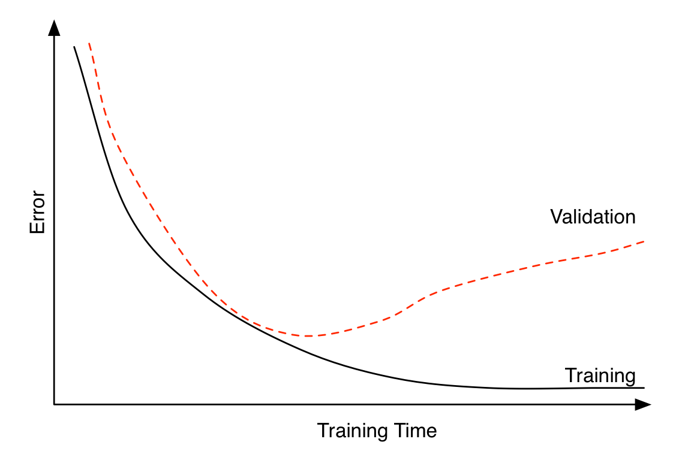
Early stopping can be seen as a regularization technique to avoid overfitting. The plot shows that both training error and validation error decrease at the beginning of training process. However, after a while, validation error starts to increase while training error keeps on decreasing. This is an indication of overfitting. Overfitting leads to poor performance on the unseen data, which is seen here through the gradual increase of validation error. Early stopping can track the model’s performance through the training process and stop the training at the right time.
Try early stopping
Hinton calls it a “beautiful free lunch”
2random.seed(2026)
3model = Sequential([
Dense(30, activation="leaky_relu"),
Dense(1, activation="exponential")
])
4model.compile("adam", "mse")
5es = EarlyStopping(restore_best_weights=True, patience=15)
%time hist = model.fit(X_train_sc, y_train, epochs=1_000, \
6 callbacks=[es], validation_data=(X_val_sc, y_val), verbose=0)
7print(f"Keeping model at epoch #{len(hist.history['loss'])-15}.")- 2
- Sets the random seed
- 3
- Constructs the sequential model
- 4
- Configures the training process with optimiser and loss function
- 5
-
Defines the early stopping object. Here, the
patienceparameter tells how many epochs the neural network has to wait with no improvement before the process stops.patience=15indicates that the neural network will wait for 15 epochs without any improvement before it stops training.restore_best_weights=Trueensures that model’s weights will be restored to the best model, i.e., the model we saw before 15 epochs earlier - 6
- Fits the model with early stopping object passed in
- 7
- Prints the outs
CPU times: user 48.6 s, sys: 3.58 s, total: 52.2 s
Wall time: 49.5 s
Keeping model at epoch #57.Loss curve
We can look at the training and validation loss function ("mse") across epochs. The validation error is lowest at the end of epoch 8 (starting from 0), so the weights are restored to that model.
plt.plot(hist.history["loss"])
plt.plot(hist.history["val_loss"])
plt.legend(["Training", "Validation"]);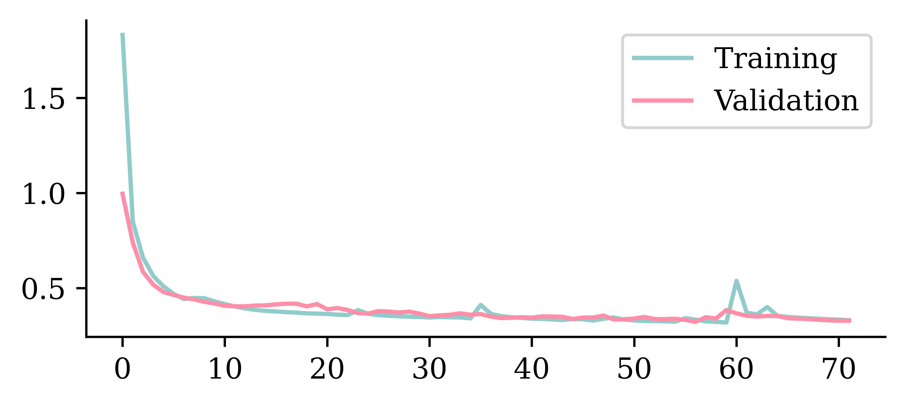
Loss curve II
plt.plot(hist.history["loss"])
plt.plot(hist.history["val_loss"])
plt.ylim([0, 0.75])
plt.legend(["Training", "Validation"]);
Predictions


Comparing models (validation)
| Model | MSE | |
|---|---|---|
| 1 | Basic ANN | 1.322504 |
| 2 | Long run ANN | 0.629846 |
| 0 | Linear Regression | 0.505942 |
| 3 | Exp ANN | 0.380793 |
| 4 | Early stop ANN | 0.323157 |
In this case, early stopping did not improve the ANN (0.387 vs. 0.369). Ultimately, we hope that these methods improve the model but that’s not always the case. This shows the importance of validating your models.
The test set
Evaluate only the final/selected model on the test set.
mean_squared_error(y_test, model.predict(X_test_sc, verbose=0))0.33164115325909604model.evaluate(X_test_sc, y_test, verbose=0)0.3316410779953003Evaluating the model on the unseen test set provides an unbiased view on how the model will perform. Since we configured the model to track ‘mse’ as the loss function, we can simply use model.evaluate() function on the test set and get the same answer.
References
Goodfellow, I., Pouget-Abadie, J., Mirza, M., Xu, B., Warde-Farley, D., Ozair, S., Courville, A., & Bengio, Y. (2014). Generative adversarial nets. Advances in Neural Information Processing Systems, 27.
Ho, J., Jain, A., & Abbeel, P. (2020). Denoising diffusion probabilistic models. Advances in Neural Information Processing Systems, 33, 6840–6851.
Krizhevsky, A., Sutskever, I., & Hinton, G. E. (2012). ImageNet classification with deep convolutional neural networks. Advances in Neural Information Processing Systems, 25, 1097–1105.
Murphy, K. P. (2012). Machine learning: A probabilistic perspective. MIT Press.
Pace, R. K., & Barry, R. (1997). Sparse spatial autoregressions. Statistics & Probability Letters, 33(3), 291–297.
Russell, S., & Norvig, P. (2021). Artificial intelligence: A modern approach (4th ed.). Pearson.
Samuel, A. L. (1959). Some studies in machine learning using the game of checkers. IBM Journal of Research and Development, 3(3), 210–229.
Keras model methods
compile: specify the loss function and optimiserfit: learn the parameters of the modelpredict: apply the modelevaluate: apply the model and calculate a metric
random.seed(12)
model = Sequential()
model.add(Dense(1, activation="relu"))
model.compile("adam", "poisson")
model.fit(X_train, y_train, verbose=0)
y_pred = model.predict(X_val, verbose=0)
print(model.evaluate(X_val, y_val, verbose=0))4.4610700607299805Package Versions
from watermark import watermark
print(watermark(python=True, packages="keras,matplotlib,numpy,pandas,seaborn,scipy,torch"))Python implementation: CPython
Python version : 3.14.5
IPython version : 9.13.0
keras : 3.14.1
matplotlib: 3.10.9
numpy : 2.4.4
pandas : 3.0.2
seaborn : 0.13.2
scipy : 1.17.1
torch : 2.11.0
Glossary
- activations, activation function
- artificial neural network
- biases (in neurons)
- callbacks
- classification problem
- cost/loss function
- deep network, network depth
- dense or fully-connected layer
- early stopping
- epoch
- feed-forward neural network
- hidden layer
- Keras, TensorFlow, PyTorch
- labelled/unlabelled data
- machine learning
- minimax algorithm
- neural network architecture
- perceptron
- ReLU
- representation learning
- sigmoid activation function
- targets
- training/validation/test split
- weights (in a neuron)